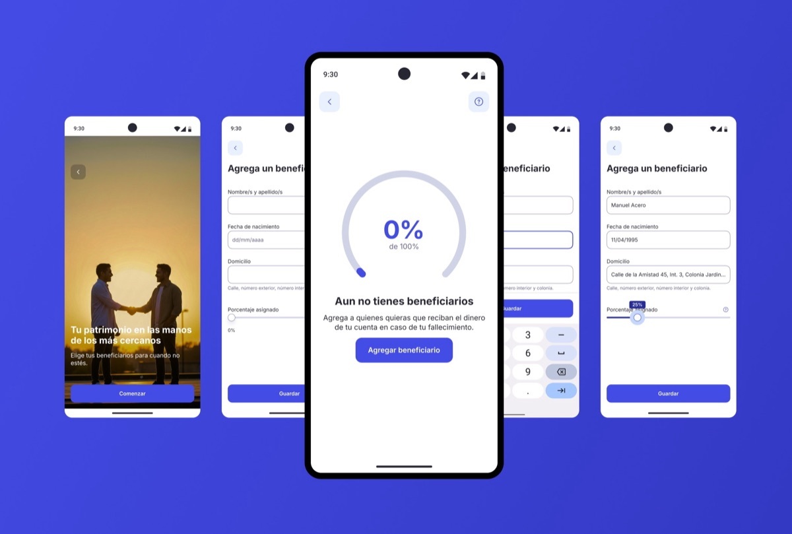
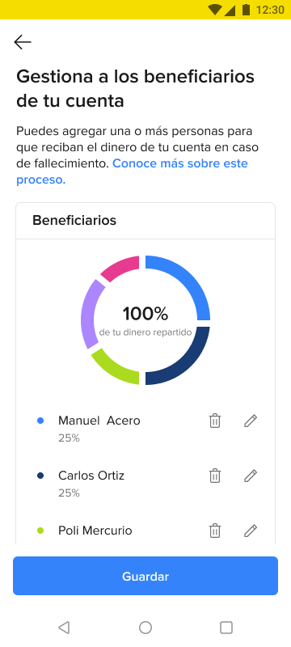
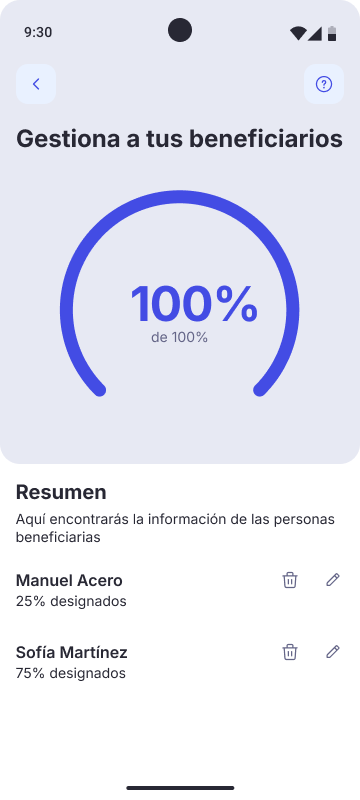
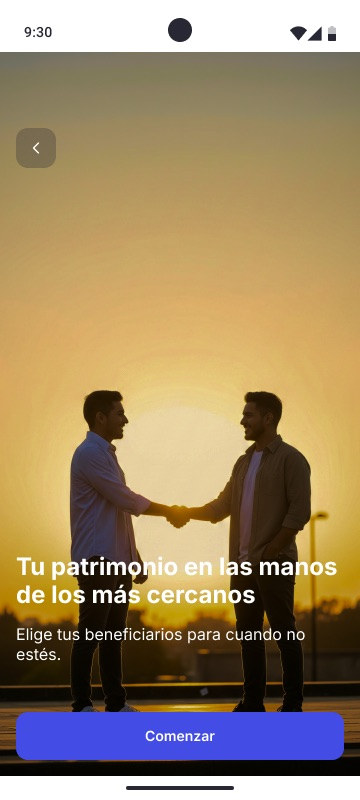
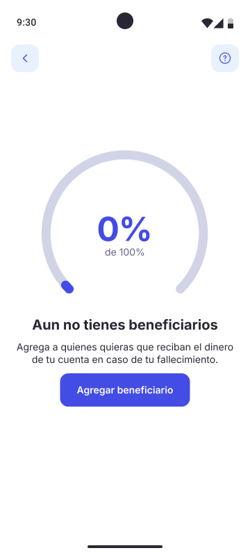
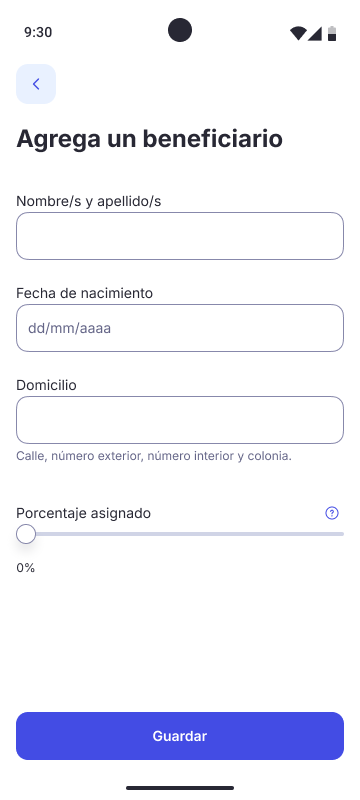

Redesigning the beneficiary experience for Mercado Libre — helping millions of users designate who receives their money in case of death, with transparency, clarity, and empathy.

Mercado Libre — the largest e-commerce and fintech ecosystem in Latin America — allows users to hold money in their digital wallets. But what happens to that money if the account holder dies?
The platform already had a basic beneficiary designation flow, but it was built on a legacy front-end: visually outdated, confusing to navigate, and disconnected from the design language users had come to expect from Mercado Libre.
This wasn't just a visual refresh. It was an opportunity to rethink how a fintech platform handles one of the most sensitive topics in personal finance.
How do you design for death in a product built for everyday transactions?
The legacy experience had several critical issues:

Before — Legacy Android

After — New design system
This was one of those projects where the design system gives you the components, but not the answers. No one had built an experience like this using the new system. Every decision was a first.
Before opening Figma, I spent time analyzing how traditional banks handle beneficiary designation. The pattern was clear: cold, legal, transactional. I wanted the opposite — a flow that acknowledges the emotional weight of the decision while keeping the process simple.
I used Claude and Gemini to rapidly explore copy alternatives for sensitive moments in the flow — testing different tones for explaining what happens to your money, how to frame the "percentage distribution" concept, and what language feels reassuring vs. alarming. I also used AI image generation tools to create contextual imagery for the onboarding screens.

The emotional entry point — warm imagery and human language instead of legal disclaimers
I broke the original monolithic form into three clear stages:
The biggest technical challenge was adapting the new design system to a flow it was never built for. There were no existing patterns for percentage distribution UIs, progress rings tied to financial data, or onboarding screens for legally sensitive features. I had to extend the system without breaking it — creating new patterns that could be reused by other teams facing similar challenges.

1. Empty state — 0%

2. Add beneficiary
3. Complete — 100%
Use arrows or keyboard ← → to navigate
The final experience transforms a legal requirement into a moment of care. Instead of filling out a form, users go through a guided journey that respects the sensitivity of the topic:
The redesigned flow was implemented for both Android and iOS. While I don't have access to post-launch quantitative metrics, the qualitative feedback was consistently positive:
Design systems don't have all the answers. When you're building something the system wasn't designed for, you have to think like a system designer yourself — creating patterns that solve your problem and serve the broader ecosystem.
AI is a thinking partner, not a shortcut. Using Claude and Gemini for copy exploration didn't replace my judgment — it expanded my options. I could test 20 different ways to say "what happens when you die" in minutes, then choose the one that felt most human.
Sensitive topics demand design bravery. The easy path was to keep it transactional — a form, a legal checkbox, done. The harder path was to acknowledge that we're asking someone to think about their own death. That acknowledgment, expressed through warm imagery, progressive disclosure, and careful language, is what makes the experience feel different.